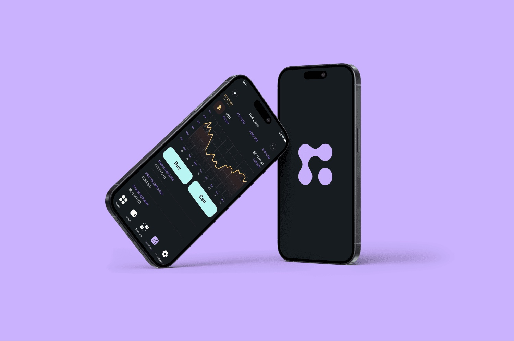
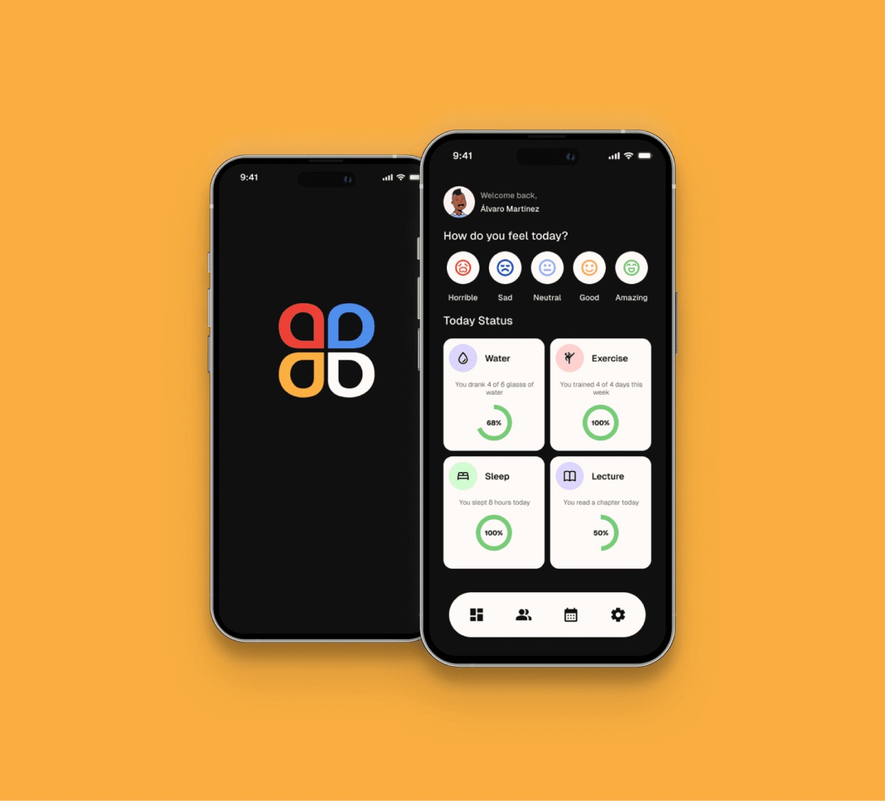

Trabajo seleccionadoSelected work

Forte
Una app de finanzas que te enseña antes de dejarte invertir. Investigación con unas 30 respuestas de encuesta y 5 entrevistas, UX/UI y marca, en solitario.
A finance app that teaches you before it lets you invest. Research with ~30 survey responses and 5 interviews, UX/UI and brand, solo.
2024
Namu
Hacer visible el consumo de agua en casa y convertir el ahorro en hábito. Design sprint en equipo.
Making household water use visible, and saving it a habit. Team design sprint.
2024
Todoo
Bienestar para gente que nunca tiene tiempo. App móvil e investigación con usuarios.
Wellbeing for people who are always busy. Mobile app and user research.
2024ExperienciaExperience
- AnexiaDesign system multimarca (3 marcas, ~100 componentes) y una plataforma SaaS internaMulti-brand design system (3 brands, ~100 components) and an internal SaaS platform
- NurunDesign systems para Moeve e iconografía para IberdrolaDesign systems for Moeve and iconography for Iberdrola
- FujitsuUX/UI en un proyecto de salud pública, web y móvilUX/UI lead on a public health project, web and mobile
- KeroxDiseño UX/UI de un producto de salud, de Figma a AngularUX/UI design for a health product, from Figma to Angular
- AthagonDiseño y desarrollo de la web de la empresaDesigned and built the company website
- FreelanceIdentidades visuales para músicos independientesVisual identities for independent musicians
Sobre mí, formación y herramientasAbout, education and toolkit
ContactoContact
adrianmedinasg@gmail.comCopiadoCopied